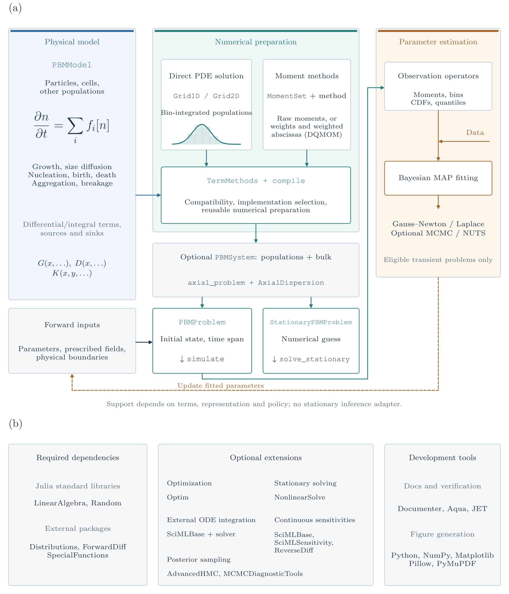

Contributing, internals, and extensions
Source organization

Physical terms and numerical preparation are shared by transient and stationary forward problems. Their inputs differ: a transient problem needs an initial state and time span; a stationary problem needs a numerical guess. The inference connection applies to eligible transient and stationary models. Both use observation operators, likelihoods, priors and the shared MAP/uncertainty/sampling interfaces. StationarySolver uses checked equilibria and implicit derivatives at smooth isolated roots; singular roots, branch/rank changes and incompatible residual AD require explicit restrictions or a verified finite-difference path. Transient ODE sensitivities do not supply stationary or event jump rules. The diagram does not promise every combination of terms and methods. Its solid forward path also applies to a standalone population. Dashed side inputs show optional population/bulk coupling (PBMSystem) and prescribed axial reactor transport (AxialDispersion) at equal visual priority. A single population can select an axial domain during compilation; axial_problem lifts an eligible coupled local problem. These additions compose subject to their own restrictions. DQMOM evolves weights and weighted abscissas; the other displayed moment route need not have the same state layout.
The forward-UQ workflow wraps the same problems, solvers and observables with UncertainInputs and UQProblem. Monte Carlo can propagate prescribed joint inputs or posterior draws without a fitting step; non-intrusive PCE uses eligible independent normal/uniform/beta reference coordinates and a declared map to physical inputs. Regression and quadrature share the public pce_basis recurrence contract; refine_pce checks validation and mean/variance stability before selecting a surrogate. These checks are separate from propagated uncertainty. Both methods use the core dependencies.
The figure and generator use the current dependency declarations. Regenerate without simulations using python paper/architecture/generate_pbm_architecture.py from the repository root with the paper Python environment and LaTeX installed. The schematic uses DejaVu Sans lettering with a LaTeX-rendered population-balance equation; --usetex additionally renders the other lettering through LaTeX. Statistics belongs to the test dependencies; it is not part of the simulation core shown in panel (b).

The module is assembled in src/PopulationBalanceModels.jl. modeling/ holds physical terms, laws, sources, and boundaries; representations/ defines grids and moment bases. numerics/ contains selectable algorithms, and compilation/ validates combinations and creates prepared terms. coupling/ packs populations and bulk balances; time_integration/ advances them; inference/ maps results to observations and estimation. stationary/ assembles stationary problems and parameter paths from the same residuals; its optional NonlinearSolve adapter lives alongside other integrations in ext/.
This separation lets physical laws survive changes of representation and numerical method. core/interfaces.jl defines public dispatch contracts and method selection. BatchDomain and AxialDispersion implement well-mixed and prescribed axial advection–dispersion domains. The axial compiler wraps local sectional residuals and adds shared physical face fluxes; it does not treat position as another intrinsic coordinate. General CFD remains outside the scope.
Add a numerical algorithm
The public sectional extension contract is:
- Define a subtype of AbstractTermMethod.
- Extend prepare_term(term,method,representation;...) to validate applicability and construct reusable coefficients, quadrature or deposition caches.
- Extend add_term!(du,u,term,method,cache,operator,p,t,ctx) to add its residual. Sectional methods return unresolved birth number/property rates for diagnostics.
- Test the method's actual conservation, positivity assumptions, boundary behavior, accuracy and refinement. Implementing an interface is not validation.
Here is a complete extension skeleton that delegates to the existing algorithm:
using PopulationBalanceModels
struct MyAggregationMethod <: AbstractTermMethod end
PopulationBalanceModels.prepare_term(term::Aggregation,::MyAggregationMethod,grid::Grid1D;kwargs...) =
prepare_term(term,FixedPivot(),grid;kwargs...)
PopulationBalanceModels.add_term!(du,u,term::Aggregation,::MyAggregationMethod,cache,op,p,t,ctx) =
add_term!(du,u,term,FixedPivot(),cache,op,p,t,ctx)Replacing those preparation/residual calculations with the new algorithm does not require editing a central list of aggregation method names. A new physical term can likewise subtype AbstractPBMTerm, declare mechanism and provide compatible preparation/residual methods. Common model validation does not hard-code a whitelist of user term types.
CustomTerm remains a convenient model-specific escape hatch. A reusable numerical method should use the explicit policy contract so its identity and cache are inspectable and selectable. ConservativeExchange and diagnostics call the selected residual, including external methods.
Extend moment evolution
The type hierarchy exposes AbstractMomentMethod, with AbstractMomentClosure for raw-moment states and AbstractDirectMomentMethod for methods with other states. Moment compilation automatically plans individual equations:
op = compile(model,MomentSet(0:3);moment_method=QMOM())
moment_plan(op)Analytical contributions read tracked moments directly and reconstruct only missing orders. Generic population integrals use the selected family. A global reconstruction and missing-moment cache are shared within one residual evaluation. examples/moment_closures.jl demonstrates quadratic growth with only M4 missing; examples/quadrature_moment_methods.jl exercises the extended families.
An analytical term extension supplies moment_dependencies(term,k) and analytical_moment(term,k,getmoment,p,t,ctx). Return nothing when no analytical rule is implemented. Generic integral extensions declare supports_moment_integral(term,basis) and retain the existing prepare_term(...,QuadratureMomentRule(),basis) / moment_term! hooks. Preparation caches reach that evaluator unchanged. Independent source laws must supply their own moments, never use population quadrature as a source law. These capabilities concern implemented rules, not symbolic inference from probes.
A new moment family supplies:
| Public hook | Responsibility |
|---|---|
| validatemomentmethod | Check the supported physical laws, moment basis and family options |
| momentstatelength | Define the packed state layout; it need not equal the number of tracked moments |
| moment_value | Convert a state into an experimental or coupled-model moment |
| moment_rate | Apply the chain rule from the method's derivative to a moment rate |
| validatemomentstate / checkmomentstate | Family-specific initial/stage validity |
| preparemomentstate | Reconstruct the density/quadrature/closure information needed at the current stage |
| reconstructed_moment | Evaluate a missing moment from that family's reconstruction |
| prepareterm / momentterm! | Prepare each selected weak-form rule and add its contribution in that family's state variables |
The concrete signatures are:
validate_moment_method(method, model, basis)
moment_state_length(method, basis)
moment_value(method, basis, state, k)
moment_rate(method, basis, state, derivative, k)
validate_moment_state(method, basis, state)
check_moment_state(method, basis, state, tolerance)
prepare_moment_state(method, basis, state, p, t, ctx)
reconstructed_moment(method, basis, state, reconstructed, k)
moment_term!(du, u, term, rule, cache, method, reconstructed, op, p, t, ctx)moment_term! adds a contribution rather than resetting the derivative. The compiled moment residual prepares reconstruction once per evaluation. The external examples in test/method_interfaces.jl show both term dispatch and a direct-state family with explicit moment chain rules. Existing third-party direct-state families retain their explicit moment_term! evaluator and report :family_evaluator in the plan. No generic inverse mapping from moment rates to an arbitrary state layout is assumed. The built-in DQMOM maps the automatically assembled raw rates through its checked source-system factorization. Family validation can require inversion even when the evolution plan is fully analytical; that distinction also governs stationary AD eligibility.
Underscored helpers such as _prepare_checked_moment_state, _gamma_primary_precise and _ledger_index are private. Third-party families should implement the public hooks above; native accepted states are checked through validate_moment_state as well as the necessary stage checks. Rate and reconstruction callbacks must be pure: rejected trials must leave no state, ledger or externally visible cache changes.
The momentrate hook lets MomentExchange remain correct for nonlinear weight/node-to-moment maps. Direct-state families must implement their evolution explicitly; the raw-moment residual is never silently applied to node variables. The external one-node growth test verifies a state layout different from the moment basis, shared bulk exchange and both moment observation adapters. The supplied DQMOM implementation uses these same hooks for a scaled weight/weighted-abscissa source solve; its conditioning and positive-weight restrictions are described in [Moment methods](momentmethods.md).
MomentSet currently holds contiguous nonnegative integer orders in one coordinate. AbstractMomentBasis leaves room for sparse, fractional or multivariate moment sets; those require additional concrete representations and compilation rules. A conditional algorithm cannot be enabled merely by renaming a one-coordinate QMOM closure.
Use moment(ctx,k) and moment(ctx.system,:population,k) in physical laws when portability across representations matters. Directly indexing ctx.N couples that law to a specific state layout. Observation and bulk-exchange adapters use the method's moment mapping.
Verification and documentation changes
The verification guide gives core, optional-solver, tensor and documentation commands. Statistics and Aqua are test dependencies; JET is isolated from runtime loading.
docs/src/ is the authoritative manual. A documentation change should preserve equations, units, restrictions and the data provenance behind each claim. Use short runnable calculations and links to full drivers; keep reporting code out of the walkthrough. New figures need numerical inputs and settings, while plot-only revisions must preserve their original producer records.
Both Distributions and this package export moment. Use selective imports (using Distributions: Normal, logpdf, for example), or explicitly qualify PopulationBalanceModels.moment when using both packages. The PBM operation integrates raw powers of particle size; StatsBase's array operation computes a sample central moment. Their statistical meanings remain distinct.
Keep walkthroughs and reference material separate. Put constructor, keyword and callback contracts in source docstrings; link those entries from guides using Documenter's @ref. The API index leads to topic-based reference pages. docs/api_reference.jl owns their navigation and source-file routing. A new file under an existing subsystem is included automatically; a new subsystem needs an explicit routing rule and, when appropriate, a short page under docs/src/api/. The longest matching source rule wins, so observation files can have their own page within the broader inference subsystem. No per-symbol exclusion list is needed.
Run julia --project=docs test/docs_reference.jl to check routing. The build rejects unassigned/ambiguous sources and empty reference groups before rendering. Documenter's strict exported-docstring coverage, duplicate and cross-reference checks remain active. Rendered pages warn at 100 KiB and fail at 200 KiB; split an overgrown topic rather than raising or bypassing those limits. Add a guide example for new behavior without embedding a generated API catalogue there.
Build with the commands in the README. The build executes model tutorials and selected case-study blocks; the local checker validates links and assets. HTML size/search advisories are distinct from fatal document-check errors. The publishing guide describes deployment.
Updating this checkout
See CONTRIBUTING.md for the review/verification workflow and Publishing for releases and versioned documentation deployment.